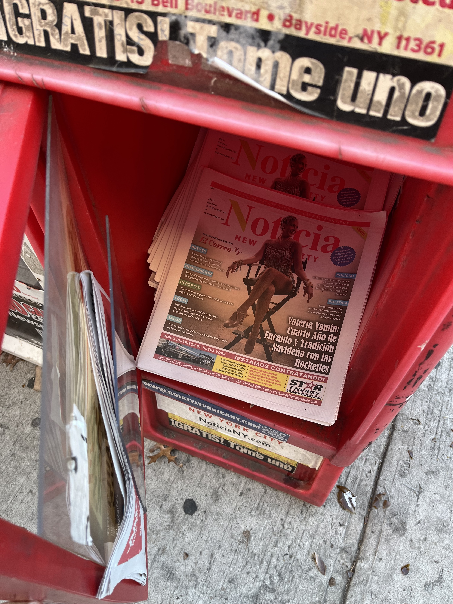
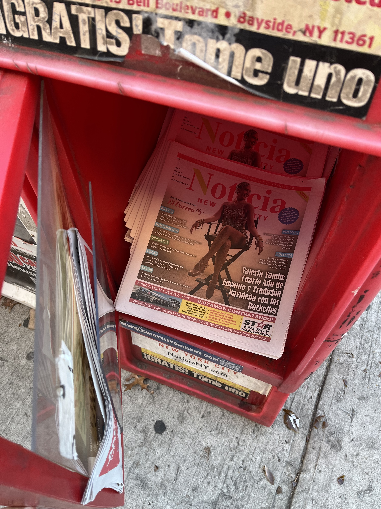

In Jackson Heights, Queens, newsracks stand on nearly every street corner. Some are well-maintained and some are neglected, covered in graffiti or filled with trash.
Now the city’s Department of Transportation, empowered by a City Council bill in November of 2024, that gives the agency authority to police newsracks for size, shape, materials and placement, will make sure the community paper receptacles are up to standards.
 

Javier Castano, who owns newsracks for the monthly Queens Latino along the 7 train line in Queens, welcomed the DOT’s action.
"There are so many racks that have been empty for a long time. They're filled with garbage. It really is terrible," he said.
The DOT conducts inspections every year, and keeps track of complaints, inspections and reinspections of newsracks and reports on the Inspection results.
A total of 6,203 newsracks were inspected in 2015-24, according to the DOT data. Most of them, around 31%, were found to be in compliance with the DOT’s regulations.
Newsracks with violations took up a much smaller number and violating conditions were resolved for almost 17% of the newsracks inspected.
However, a significant number of newsracks, around 26%, were not found at their registered locations, and approximately 12% were removed by the DOT. The transport authority may remove newsracks if they are abandoned, if the owners refuse to correct violations or are repeat violators, if the sidewalk space is needed for public transportation/utility work or in case of emergencies.
The DOT also keeps track of pending complaints, pending reinspections, incomplete inspections and failures to reinspect. These took up considerably less space in the 2015-24 inspections.
"I called the number on the MTA renovation notice at the station, but either no one answered or they didn’t know anything about newsracks."
When Castano first got into this business, the enforcement process was a bit different. He explained how owners who failed to follow the rules would receive a ticket from the DOT and would have to appear in court to resolve it. Many newsrack owners pushed back on this approach, arguing that it was unfair.
The DOT later replaced this process with the new system that exists today— a notice is issued to owners with a seven-day window in which they must correct the violations, after which, the newsrack would be removed.
Despite this policy change, Castano claimed the DOT was no longer strictly enforcing it, leaving many issues unresolved. He said the renewed attention would finally clean up the sidewalks.
However, even functioning newsracks can present certain challenges. Castano recounted how four of his racks vanished during subway station renovations, with no notification from the DOT. He expressed frustration at his attempts to resolve the issue.
"I called the number on the MTA renovation notice at the station, but either no one answered or they didn’t know anything about newsracks," he said.
Replacing the lost racks cost him $600, with shipping expenses making up a significant portion of the cost.
Despite such hurdles, some publishers go to great lengths to maintain their newsracks. Antonio Ibarria, 89, owner of El Especialito, employs a team in Queens to monitor his racks’ cleanliness. Every week, he transports the dirty ones to his New Jersey office for cleaning, using one of his eight trucks.
Not all publishers can afford such upkeep. Yogesh Dangol of the Vishwa Sandesh Weekly , a Nepali newspaper, shared his struggles after discontinuing newsrack distribution. Lacking clear guidance from the DOT, he resorted to dismantling the racks himself.
"I had to cut some of them up to fit in my garbage containers, so the garbage trucks would pick them up. One of them I kept as a storage rack for my garden tools. A few are still on the sidewalks—I’ll get to them soon," he said.
Even though Dangol no longer owns the newsracks, they still display his newspaper’s name.
"I’m technically not liable anymore, but if something happens, it’s still our name that gets tarnished," he said.
Over the years, he has faced three DOT citations for racks being less than the mandated 12 inches from the curb.
Some publishers, like Dangol, have moved away from newsracks altogether. He started distributing at temples, grocery stores, and restaurants, which saw positive results until the paper stopped printing physical editions a year and a half ago.
"Restaurants loved the papers. They even called us asking for more papers when they ran out, maybe they were using them to wrap up people’s food. I’m not sure.” said Dangol, who once saw a restaurant worker grab the newspaper to clean up a spill.
Interestingly, Bangla-language newspapers, popular in Jackson Heights’ growing Bengali community, have never relied on newsracks. Instead, they focus on distribution in restaurants, grocery stores, and mosques.
Dangol is hopeful about bringing back a print edition and is planning to replace the previous version of the paper with a monthly magazine.
“I want to keep this going even if it’s as a passion, I wasn’t earning money from it anyway. But no newsracks this time, I’m glad that’s behind me,” he said.